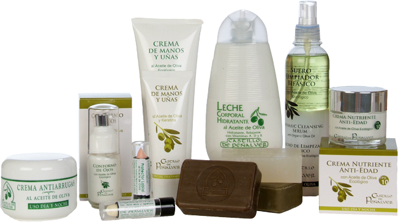
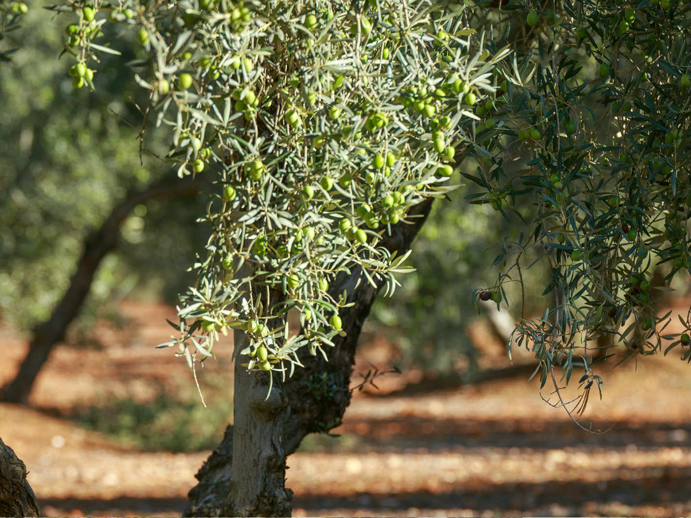
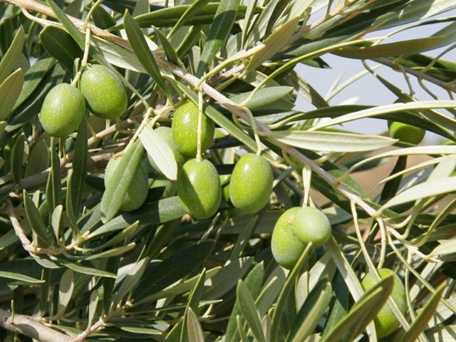
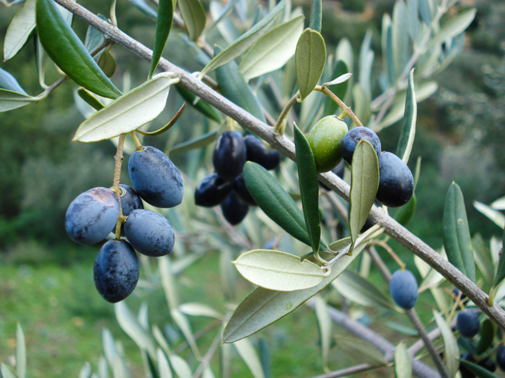
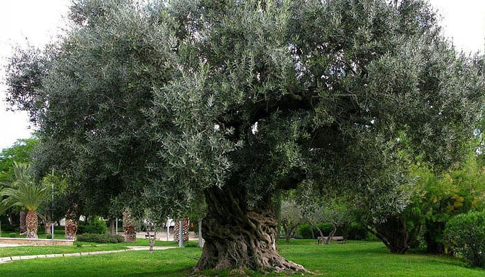

El aceite de oliva es conocido y empleado desde la antigüedad
por las grandes civilizaciones, ya que posee muchas propiedades
beneficiosas para la salud, por ello es conocido como el oro líquido.
Para la elaboración del aceite de oliva se pueden seguir dos métodos, el continuo y el método tradicional
ELABORACIÓN DEL ACEITE DE OLIVA
El aceite de oliva se elabora guardando los tiempos, el método de elaboración tradicional, convive con la modernidad, es decir, con el método continuo pero siempre con un cuidado y un mimo excepcional dando como resultado un aceite de oliva de gran calidad.
SALUD Y ACEITE DE OLIVA
Desde la antigüedad, al aceite de oliva se le han otorgado grandes propiedades curativas y beneficiosas para la salud, por eso recibe el nombre de oro líquido, por esta razón se le considera un elemento mitad alimento mitad medicina.
Propiedades del Aceite de Oliva Virgen Extra (específicas)
Los expertos afirman que el aceite de oliva virgen extra es el mejor que se puede consumir y esto lo demuestran las asombrosas propiedades que se le atribuyen al aceite de oliva de mayor calidad:
Las características que diferencian un aceite oliva virgen de otro, es su acidez, color y sabor, como también su origen y tierra de cultivo.
Estos son algunos de los productos derivados del aceite de oliva: Aceite de oliva virgen extra, cosmética natural, jabón de aceite de oliva, crema de manos, etc.

CONSERVACIÓN DEL ACEITE DE OLIVA
El aceite de oliva, es un alimento vivo, por lo cual, hay que prestar atención a la hora de conservarlo. Pues tiene que estar preservado de olores, polvo y luz. En la conservación del aceite de oliva, se tiene mucho cuidado en las almazaras.
EL OLIVO
El olivo pertenece a la familia de las oleáceas, y posee unas características muy peculiares tanto en su tronco como en sus hojas. Además, no existe una única variedad de olivo, ya que en España existen diversas variedades de olivo, cada una de ellas da un aceite de gran calidad.




Características de la aceituna DE MESA
Las aceitunas en un principio son de color verde, pero, a medida que van madurando, se vuelven negras.
La principal función de la aceituna es la obtención de aceite, aunque también se pueden consumir directamente, recibiendo el nombre de "aceituna de mesa", para este fin se recogen tanto verdes como maduras. Las olivas verdes son de este color, el cual conservan una vez aderezadas. Las aceitunas maduras son de color azulado oscuro cuando están frescas y negruzcas una vez preparadas
Las aceitunas de mesa se pueden clasificar en cuatro tipos:
- Verdes:
Las aceitunas de mesa son firmes, sanas y resistentes.
- De color cambiante:
obtenidas de aceitunas de color rosado, recogidos antes de su completa madurez.
- Negras:
Obtenidas de aceitunas maduras, pudiendo presentar, según la zona de producción y la época de la recogida, color negro rojizo, negro violáceo, violeta oscuro, negro verdoso o castaño oscuro.
- Ennegrecidas por oxidación:
son aceitunas que no están totalmente maduros han sido oscurecidos mediante oxidación. el amargor lo pierden mediante tratamiento con lejía alcalina, debiendo ser envasadas en salmuera y preservadas mediante esterilización con calor.
Las aceitunas son un alimento importante dentro de la Dieta Mediterránea junto con el aceite de oliva virgen extra
Las aceitunas constituían un alimento de gran importancia en la dieta de nuestros antiguos. Tradicionalmente se consumían como complemento alimenticio en meriendas o almuerzos que se realizaban en el campo o en los hogares; era muy habitual el consumo de olivas negras con pan. En la actualidad las olivas o aceitunas se emplean como aperitivos, para la elaboración de ensaladas o en determinados guisos.
Ya en la antigüedad clásica se constatan escritos que plasman la tradición de la preparación de aceitunas destinadas a un consumo directo. Los griegos sazonaban las aceitunas con miel y algo de vinagre, pues les agradaba el sabor dulzón